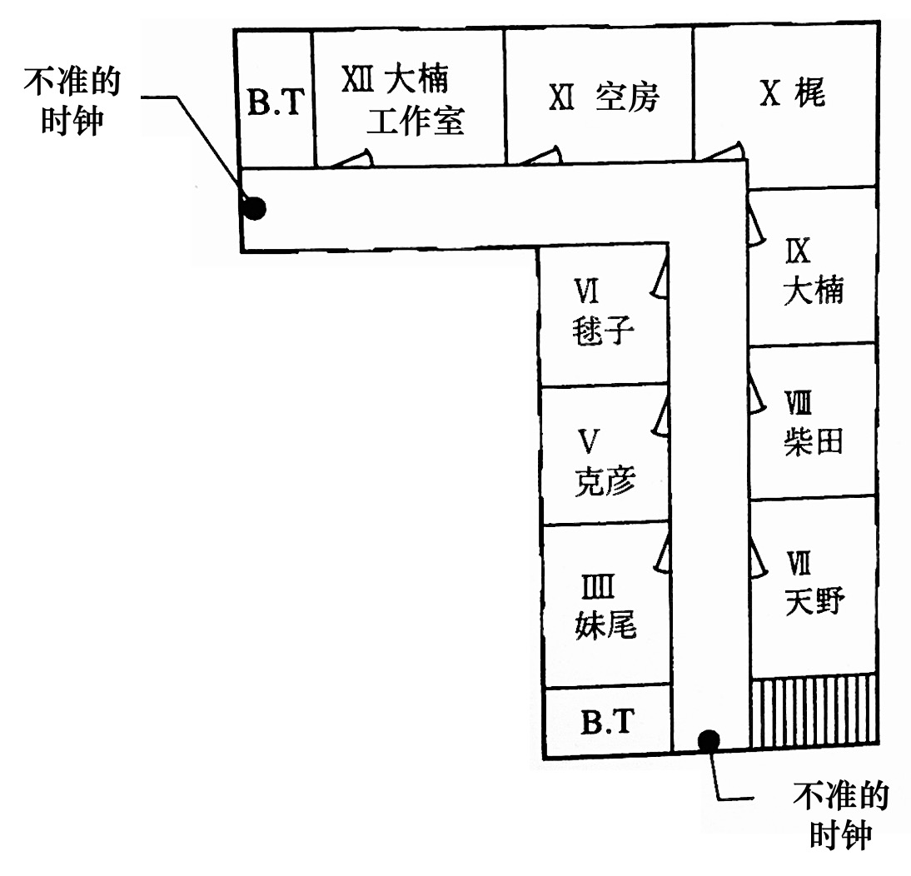

「翻译」时钟馆事件·今邑彩
本文为「時鐘館の殺人」标题作的翻译。原文版权归作者与出版社所有，翻译仅供学习交流，禁止用于商业用途。

序幕
电话铃响了。
在铃声响起之前，它发出了一个吸气般微弱的声音，我心想“有电话吗”，便往旁边瞄了一眼，果不其然。我咂了咂嘴，把手从文字处理器的键盘上移开，躺了下来。趴到榻榻米上后，用力伸一伸右手就能够到电话。
时值二月。窗外的庭院中，积雪消融，梅花盛开。我正把文字处理器放在被炉上，急速而有点焦躁地敲击着键盘。
出道已经三个月了。在这个随便扔块石头都有可能砸到一位推理小说家的时代，出道倒是简单，但问题在于出道之后。容易出道意味着竞争率也随之提高。一不留神，我的命运就会像那窗外的雪一般，被轻易地扫到角落、悄无声息地泯灭。我可不想如一阵疾风般出现又如一阵疾风般消逝。为此，我必须尽快完成第二部作品。但我却写不出来。这也是常有的事。
负责我处女作的编辑时常毫不客气地对我说什么“第二部作品至关重要。能否留住读者全都取决于第二部作品的质量”这种既像鼓励又像警告的话。如果有新人能在这样的“鼓励”下轻松写出杰作的话，那我真想见见这位。毫无疑问，绝对是天才。
必须尽快完成第二部作品也是出于经济上的考虑。处女作的版税早就花完了。由于是在没有明确未来规划的情况下成为了全职作家，在第二部作品的版税到账前，我都是不折不扣的无收入者。
这种不稳定状态真是让人忍俊不禁。
也许这通电话是关于赚钱的事情？听起来很欢快的电话铃声让我有了这样的预感。发大财！我这么祈祷着，躺着接了电话。
“喂，您好？”
“请问是今邑小姐家吗？”
陌生的男声。既然他提到的是我的笔名，多半是出版社的相关人士。万岁！看来是能赚到钱钱的事情。不过，现在高兴还为时尚早，不能排除只是一个简单的电话采访的可能性。
“是的，我就是。”
虽然我这样想，但还是情不自禁地提高了声音。我赶紧在榻榻米上正襟危坐。一直躺着的话，福神可是会溜走的。
“我是QED的××。”
QED？啊啊《QED》啊，与《Mystery Magazine》和《EQ》齐名的专业推理杂志。
“我是贵刊的忠实读者。”
我立刻开始奉承他。不过这并非完全的谎言。这本名为《QED》的月刊杂志非常本格，我也确实经常阅读。
“那可真是感激不尽。”
对方的声音中突然透露出了笑意，关系似乎也拉近了不少。阿谀奉承在人际关系中实在不可或缺。
“那您知道我们杂志有一个推理凶手的谜题小说专栏吧。”
“当然知道！我还投稿过呢。”
《QED》中设置了一个经典的“挑战读者”专栏。他们请已经出名的推理作家出题，然后让读者来猜凶手，猜对的读者就会得到奖金。尽管这不算什么新点子，但作为一个强调本格推理的杂志，它的投稿规则非常之严格，不是那种在明信片上随手写下犯人的名字，便能寄希望于通过抽签来获奖的机制，而是必须在八百字以内、逻辑清晰地论述认定此人为凶手的根据。与之相对，如果有多位读者给出了正确答案，他们也不会随随便便地通过抽签来决定获奖者，而是会由编辑部选择一个论据最为完备的答案，奖励五万日元。
“真是非常感谢。那就方便说明了，我们迫切希望您能作为出题者参与这个专栏。”
噢耶—— 果然是能够赚到钱的事。正巧，我手头有一篇存货，是一个共三百五十页的长篇小说。我之前把它投给了某个奖，但不幸落选，正当我失望之际，稿子又出乎意料地被一家出版社捡走。本来出版社告诉我稍作修改就能出书，但最后还是惨遭退稿，空欢喜一场。
这部作品的谜题性非常不错，看来它终于能派上用场了。真是三度出嫁之作啊。
“请让我来做！我手头有稿子。”
“这样啊。那按每页400字来算，请确保问题篇和解答篇加起来不超过一百页。”
编辑以一种理所应当而又公事公办的语气回答道。
“但我的稿子有三百五十页。”
“那个，我是说，不超过一百页。”
编辑顿了一下，冷淡地回应道。
“我可以努力缩减到两百页。”
“不超过一百页。”
“我尽可能控制在一百五十页。”
“不超过一百页。”
“如果将其压缩到一百页，内容就会变得超级浓缩的。”
“内容浓缩是好事，读者爱看。”
“但过分浓缩的话呢？就像咖啡一样，过浓的咖啡据说可是会引发胃癌的。”
“读一本浓缩推理小说可不会引发胃癌。”
“但是，所谓过犹不及……”
“总之，请务必控制在一百页之内。”
编辑带着明显的不悦之情，毫不客气地说道。看起来完全没有妥协的余地。我意识到再争论下去也毫无意义。吆喝原稿就到此为止吧，再讨价还价的话可能会适得其反，最后落得“请当此事从未发生过”的境地。
“那好吧，我会控制在一百页以内。”
我极不情愿地答应了，以不会让他听到的音量悄悄地叹了口气。
“那么，请不要超过一百页。”编辑再次强调了一遍、告知了截稿日期，便挂断了电话。
我放下电话，忙不迭地掏出计算器。虽然忘了问他每一页的稿费是多少（居然忘了问最重要的事！）但就算我是新人作家，每页一千日元的价格也实在是不人道。我早早地打起了如意算盘：不清楚新人的市场价是多少，不过应该差不多有这个数吧。虽说，这点钱真的没必要专门拿出计算器来算……
话说回来，能确定好退稿的销路固然可喜可贺，但居然还得再删掉二百五十页。就算把内容精炼好了，对于作者来说也实在是残忍啊。噫吁嚱。
时钟馆事件·问题篇
藏于寒壁内，封于棺之中。
其为时之骨，嗄吱声不断。
此乃时钟之惧也。
——摘自 上田敏译《海潮音》之
埃米尔·维尔哈伦《时钟》

1
时钟馆。
它像一座孤岛，漂浮在名为东京的混凝土海洋中。
透过浓绿色树木的间隙，便可看到这座拥有着陡峭屋脊与褪色红砖的西洋古宅。对于那些日复一日被困在高层建筑中的人来说，其这童话般梦幻的外观无疑是抚慰疲惫双目的良方。
宅邸的主人名为樱井彻男，年逾花甲。他从大型食品公司退休后，与妻子敏江一起生活。若追根溯源，战前樱井家乃华族之家。尽管如今家产仅余此宅邸，但从先生那波浪般的银发、端正的面容到淡定的气度，无一不流露出贵族后裔的独特风范。
樱井氏是一位狂热的钟表爱好者，馆内的客厅摆满了他闲暇时收集的古老时钟。然而，其中鲜有珍品或价值不菲的舶来品，反而多为过去家家户户都有的八角时钟等庶民物件。称得上珍贵的只有摆在客厅一角的橹时钟，即大名时钟：这是江户时代的大名们命人仿照德国挂钟的结构，花费数日制作而成的。再就是香时钟还算珍奇，这是用灰作底、香作线，通过燃烧情况来计时的一种风雅之物。
至于“时钟馆”其名，据说是取自樱井氏钟爱的诗集《海潮音》中，由埃米尔·维尔哈伦所著的《时钟》一诗。
不过，最为独特的是，时钟馆内的钟都被有意地调错了时间，没有一个指向正确的时刻，甚至不乏早已停止运转的时钟。这是因为宅邸的主人是一位纯粹的自由主义者。据他所说，看着不计其数的指针指向同一方向无异于观看军队行进，这光景会让他感到生理性厌恶。樱井氏的左腿留有残疾，行走时明显地拖着腿。这是那场令人厌恶的战争的后遗症。
对于我们而言“不准”的旧时钟，在樱井氏看来却是“活在自己的时间里”。他们是从“告知正确时刻”这乏味的任务中永远解放出来的可敬老物件。对于膝下无子又不养宠物的樱井氏来说，这些钟就是他倾注全部心力的唯一对象。对他而言，忘记给钟表上发条无异于忘记给宠物喂食。
栖息于这终焉之地的各式时钟仿佛有了生命一般，无论何时都能听到不知从何而来的钟声。有的钟声显得谨小慎微，有的则悠然自得，还有的像老人深沉的叹息。
说起来，樱井氏本打算退休后与他心爱的旧时钟相伴，宁静地了此余生。可惜他的妻子敏江不同意丈夫这种奢侈行为。在她看来，让十几个房间白白地空着实在是太浪费了，就算是为了保证退休后的生活质量，也应该开放二楼，招揽租客。
尽管樱井氏强烈反对这个不得了的想法，但最终还是屈服于妻子的雄辩，不得不发布征集租客的广告。然而，当他见到了那位被广告吸引来的租客时，樱井氏的立场立刻发生了180度的大转变，对这个招募租客的主意点头称是。
那个人物便是名为大楠润也的46岁推理小说家。可能很多人压根不知道大楠润也为何方神圣，毕竟他既不是经常出现在广告或杂志封面上的热门作家，也不是那种会被称为推理小说界的大师或巨匠的那种类型。硬要说的话，他更像是推理小说界的异兽。如果不是推理小说（更确切地说，那种聚焦于解谜和诡计的侦探小说）的狂热粉丝，否则可能听都没听过这个名字。不过，尽管他知名度不高，但对于一部分粉丝来说，他正是新兴宗教的教主一般的存在。
一言以蔽之，时钟馆的主人便是这位作家为数不多的粉丝中的一员。
这位与馆主志同道合的作家很快就搬进了时钟馆。主人自是热烈欢迎，但女主人那边却颇有顾虑，担心这位来历不明的推理作家无法每个月按时上交房租。不过，这次轮到她屈从于丈夫的热情。
所幸这位作家不仅没有拖欠房租，反而像诱虫灯一样，引诱了一个又一个潜在房客。原本严阵以待，生怕他付不起房费而深夜溜走的樱井夫人也逐渐放松了（部分）警惕。
在介绍其他的住户之前，先在此简单介绍一下这座宅邸吧。首先，踏着花岗岩台阶，走入玄关，便是宅邸的门厅。因为是纯西式设计，所以穿鞋进入即可。一楼包括一个宽敞的客厅、一个厨房和三个房间，新艺术风格的楼梯由客厅缓缓延伸到楼上。二楼则包括了九个房间和两个浴室兼洗手间。
一上楼梯的左手边，以及倒L形走廊尽头处的墙壁上，挂着两个不准的时钟。它们都是每半个小时便会咚咚作响，告知时间的那种类型。（参照上方的平面图）
这栋宅邸总共有十二个房间，像时钟一样，每个房间都用罗马数字标号。一楼的樱井氏的房间标记为I，夫人的房间标记为II，III号房不是私人房间，而是一个几乎被推理小说占领的图书室。
那么，接下来介绍一下房客们吧。
首先，XII号室和IX号室是那位推理作家的房间。由于他的书籍和资料堆积如山，一个屋子装不下，便占用了两个房间。XII号室似乎是他的工作室。
他个子不高，略为臃肿，后脑勺的头发已相当稀疏。难道说写本格推理需要过度用脑，所以头发掉得比普通人更快？据说他终生未婚，眼神又偏执，令人联想到被诅咒的诗人，一看便知是“怪人”类型。
IIII号室住的是装帧设计师妹尾隆治，43岁。他负责大楠老师著作的装帧工作，由此得知了这个“高级大杂院”的存在。他是离过婚的单身人士，此前似乎一直住在工作室里。他体格强壮，嗓门又大，乍一看更像是职业摔跤手而非设计师。
顺带一提，虽然在罗马数字中，4通常表示为IV，但这里沿用了钟表表盘上的写法，使用的是IIII。据樱井氏所说，时钟的表盘上之所以不使用IV，是因为法国国王查理五世下令建立钟塔时，觉得从V中减去I简直是不可理喻，便将IV改为了IIII。
V号室住的是笠原克彦，某私立大学文学部的三年级学生，也是樱井夫人的侄子。他在大学里是推理小说俱乐部的成员，倒不如说他就是为了加入这个著名的俱乐部（作家和评论家层出不穷），才选择了这所大学。他是一个只有批评能力见长而讨人嫌的推理宅。
VI号室住的是笠原毬子，同一所大学文学部的二年级学生。虽说和笠原克彦同姓，但他们不是夫妻（！）而是兄妹。她是个头脑灵活的可爱女孩，爱好是漫画和动画，所以是漫画研究社的成员。顺带一提，这就是我。
我和哥哥都出生于横滨，是土生土长的横滨之子。既然我已在此表明了自己的身份，此后便不再客套地使用樱井氏和樱井夫人这一称谓，而是直接称呼他们为伯父伯母。
VII号室的是天野昌三，70岁。他原为咖啡店老板，自糟糠之妻离世后，他就把店交给了儿子和儿媳经营，搬进了这里。他对于钟表的热情丝毫不逊于伯父。咖啡店的店名“咚”，似乎也是来源于钟表的鸣响。不必说，他的店里也摆满了古董钟表。
他是一位矮小、消瘦又安静的老人，总是带着一顶时髦的红色毛线帽来掩饰秃顶，而且烟斗不离手。这里的居民中，他是唯一一个对推理小说没有兴趣的人。甚至可以说，他极为厌恶那些经常出现谋杀情节的故事。他的爱好是听听老歌，最喜欢坐在客厅里那留声机前的固定位置，像小狗尼帕*那样微微歪着头，一边吸着烟斗一边欣赏音乐。这幅温馨而治愈的光景真是让人百看不厌。
译者注：小狗尼帕的形象源于弗朗西斯·巴罗于1898年绘制的画作《他主人的声音》，其形象曾在日本大受欢迎，许多家庭的电视机前摆放着小狗尼帕的陶瓷摆件。

VIII号室的住户是柴田正幸，37岁，推理小说评论家。这位搬进来的时候还曾引发了一点小风波。推理作家一得知新住户的身份便大发雷霆，声称“那个混蛋要是搬进来，我就走人”，并立刻开始收拾行李。毕竟那位评论家一有机会就在书评里对大楠氏的写作风格大加批判，说什么“落后于时代”啊、“古香古色”啊、“长满了霉菌、苔藓和蜘蛛网”啊，诸如此类，屡见不鲜，而作家早就对此怒不可遏。
最终，伯父成功地平息了事态，未经腥风血雨便将闹得鸡犬不宁的鸡与犬各自收入笼中。然而，时至今日，他俩的关系依然阴雨密布。
X号室的住户是梶叶子。她刚搬来不到三个月，可以说是最新的房客。她年芳二十九，是综合性月刊《黄金时代》的编辑，据说颇为能干。尽管《黄金时代》并非专业推理杂志，但推理小说亦占比不小。话虽如此，该杂志原本对所谓的本格派不甚热心，但最近其编辑方针有所转变，决定在本格推理领域下功夫，因此选中了大楠氏。被指派为责任编辑的梶姑娘立即行动起来，她一得知作家所在的这个“高级大杂院”还有空房，便如疾风一般麻利地搬了进来。
她是一位削肩细腰、身量纤纤，让人不知道其力量究竟从何而来的骨感美女。可爱的瓜子脸上略带雀斑，发型是利落的短发，既显得活泼可爱，又不乏淑女气质。那双大眼睛中闪烁着不甘居于人后的光芒，让人印象深刻。
说到二十九岁，对于普通女性而言，这正是站在三十岁大关前，纠结于继续工作还是选择结婚的年纪。不过，梶叶子姑娘看起来却毫不动摇，似乎是觉得工作有趣得不得了。
有了这位年龄微妙的单身美女的加入，整个宅邸像绽放的花儿一般绚烂，空气中充满了春意盎然而又躁动不安的气息。
言归正传，我们的时钟馆还有一位相关人士，而这个故事就是以他的来访为开端……
2
刚吃完晚饭，客厅里的电话铃就响了。
时钟馆外，二月的雪洋洋洒洒地堆积着。
时钟馆居民们从餐厅走到客厅，舒舒服服地坐在摆成“コ”字型的沙发上，像往常一样热闹地讨论着推理小说。
我从沙发上站起来，拿起电话：
“您好，这里是时钟馆。”
“是小毬吗？”
“哎呀，是野间先生啊。”
打电话过来的人是推理杂志《幻想宫》的编辑野间启介。《幻想宫》是大楠老师经常发表作品的杂志，虽然发行量不大，知名度也不高，但却赢得了本格推理爱好者们的坚定支持。
“我现在正要去取原稿来着。”
野间先生是大楠老师的责任编辑，临近截稿日期时，他有时会在这里过夜。
“话说我听到笑声了，那位老师不会正在和大家一起谈笑风生吧？”
野间先生有些担忧地问道。仿佛是为了证实他的不安一般，客厅内的笑声一浪接着一浪。
“没有，老师吃完晚饭就回工作室去了。”
“啊，是吗？那就好，我7点的时候到你们那。”
野间先生似乎松了一口气，匆忙挂断了电话。我看了眼手表。相比于客厅里那些不准的时钟，我的手表可谓精确无比。正好六点半。
“电话，野间先生打过来的？”
叶子小姐转过头问道，脸上浮现出一丝恶作剧般的神情。
“他说他马上过来。”
“这样啊，他在这种时候也挺辛苦呢。”
这位出色的女编辑露出了意味深长的笑容。
我离开客厅，走进厨房。伯母正站在水槽边用力地刷着锅底，额头上的青筋鼓起。我告诉她野间先生马上过来，她没有停下手中的钢丝球，问道：“留宿？” 我回答说“大概吧”，她立刻回以“打扫”二字。
她是那种不爱多说一个字的人。解读一下就是，她让我去打扫野间先生常用的XI号房。我回到客厅，从柜子的抽屉里拿出了万能钥匙，带着它上了二楼。我先去敲了敲XII号房的门，门内传来了文字处理器的键盘敲击声。
“请进。” 大楠老师的声音有些含混不清，大概是正叼着烟说话。
我打开门，探出头，对着老师的背影说道：“野间先生马上过来。” 大楠老师坐在文字处理器前，头也不回地说了句：“哦，好。他到了的话跟我说一下。” 从他头上冒出的香烟雾气徐徐上升着，宛如光秃山头上的火灾。
我关上XII号房的房门，从二楼的杂物间里取出吸尘器，又用万能钥匙打开了XI号房的房门，将这个方形的屋子彻底打扫了一遍后便走到门外，锁好门，收好吸尘器。整个过程不过十分钟。
我下楼回到客厅时，柴田先生正打着哈欠从沙发上站起来，嘟囔着：“那我去品鉴一下‘地狱的折磨’吧。” 所谓“地狱的折磨”，指的就是通读各个出版社寄来的，用于写书评的免费新书。
不一会儿，柴田先生“砰”地关上了房门。在讨论推理小说时，天野先生总是保持着沉默，嘴角挂着和蔼的笑容，不断擦拭着手中的烟斗。此时他却自言自语般说道：“为什么他晚上也带着墨镜呢？”看来天野先生不明白“装饰眼镜”为何物。
“谁知道呢，也许是为了遮住他那双小到几乎看不见的眼睛。”老哥答道。
友人前脚刚走，风凉话便立刻跟了上来。这可真是符合绅士身份的举止呢。
妹尾先生打开了电视。七点的新闻马上开始，但他关心的应该不是新闻而是天气预报。这场雪要下到什么时候呢？积雪过深的话，浪漫情调可就荡然无存了。现在已经差不多有四厘米了吧。
我稍稍拉开客厅的窗帘，望向窗外。这雪景仿佛白色花瓣在无边的黑暗中四散飞舞，实在是如梦似幻。
透过纷纷扬扬的雪之帷幕，我突然瞥见了正打开大门走进来的人影。瘦瘦高高的，是野间先生。我看了一下手表，正正好好七点整。他真是像康德一样的人。
译者注：据称康德的生活习惯十分规律，邻居们甚至会根据他散步的时间来校准钟表。
我立刻离开客厅，向玄关走去。速战速决是我的座右铭。门铃声响起，我旋即打开门。正站在石制门廊处，悠哉悠哉地拂去雪花的野间先生被我吓了一跳。
“哇，吓到我了，简直像自动售货机一样。”
“嘿嘿，欢迎欢迎。”